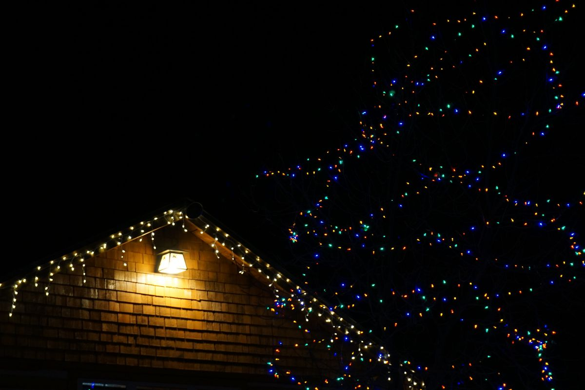

About & safety
The ladder is mine. The roof is yours.
That's the whole arrangement. I bring the ladders, the clips, the insurance and the spec sheet; your roof gets measured, lit and handed back with nothing in it that wasn't there before — no holes, no staples, no surprises in January.

How this started
Twinkle Roof started in 2016 with a neighbour's roofline and a staple gun I refused to use. He'd had lights stapled up the year before — through the wire in two places, which is how a string becomes a fuse — and asked if I'd do it "the slow way, with clips". The slow way took an afternoon, looked better than the fast way ever had, and by the following December I had eleven houses. This year the list runs past sixty.
The trade, done properly, is mostly measuring. A roofline gets paced from the ground first, then measured properly at the eave, because gables lie from the street. C9 strings are commercial cord, cut to length on site and fitted with new sockets where the cut falls — that's why my rooflines end exactly at the corner instead of doubling back on themselves in a glowing bunch. Bulbs are screwed in and tested at the ground, in the warm, before a single one goes up the ladder.
December in Asheville is short and the weather is honest about it. The rules below outrank the calendar, the booking list and the customer's Christmas party — in that order, every year.
The safety sheet
Rules that outrank the calendar
- The ladder is tied off at the eave before anyone leaves it, and a second person foots it on any pitch worth worrying about.
- Harness on steep work. If I can't stand on the pitch in work boots, I don't stand on it in December either — the harness goes on or the run gets fitted from the ladder.
- GFCI on every circuit, tested first. The trip gets pressed before the ladder comes out of the van. No GFCI, no install — I'll fit one into the quote rather than plug into an unprotected outlet.
- Nothing stapled through a wire. Ever. Clips hold the cord; staples hold nothing on my jobs.
- Connectors live off the ground. Every joint is raised, taped against melt-water and kept out of the puddle line along the eave drip.
- Cords never cross a path bare. Where a run has to cross a walkway, it goes overhead or under a cord cover — not under a doormat.
- Ice stops work. If the roof is icy we rebook, even in the last week before Christmas. A late install beats a hospital visit, and I'd rather explain a delay than an accident.
- Loads stay honest. Every circuit is worked out on the spec sheet at 80% of its rating or less — which, with LED, it nearly always is by a wide margin.
The clips decide
A clip for every roof — and none of them a screw
Most bad installs fail at the fixing, not the bulb. The clip is matched to the roof material at the measure visit, and it's named on your spec sheet.
| Roof material | Clip used | Why this one |
|---|---|---|
| Asphalt shingle | All-in-one shingle tab | Slides under the shingle course and grips the cord. Nothing pierces the shingle, so nothing leaks in February. |
| Clay or concrete tile | Tile hook clip | Hooks over the tile edge. Tiles crack under point loads, so the cord's weight hangs on the hook, never on the tile face. |
| Standing-seam metal | Seam clamp | Clamps the raised seam. Magnets slide on a steep pitch; a clamp doesn't. |
| Gutter line | Gutter clip | Hangs the string on the gutter lip, bulbs facing out. Comes off in January without touching the gutter. |
| Brick parapet | Parapet clamp | Grips the coping stones with padded jaws. Brick is never drilled — see the terrace on the finished houses page. |
After the lights come down
A light string's worst enemy isn't December, it's the eleven months in a hot attic in a knotted ball. Takedown is half the trade: every run comes down in January, gets coiled hand-to-elbow, tested while it's still warm from the house, and labelled by run — "front eave, 18.6 m", "oak, lower limbs" — so next year's install starts from a shelf, not an archaeology dig.
Bins live at my workshop at $18 a bin per season, or in your garage for nothing, labelled the same way either way. Bulbs that died in service get replaced at the takedown and noted on your sheet, so the count on next year's spec is the count that actually lights.
Insured for roof work in North Carolina. References from last season's streets are available on request — most owners say yes to being asked, and Margaret, Ellie, Grace and Chris have already said it in print on the finished houses page.
Measure first. It's free, and it's the whole method.
Twenty minutes with a ladder and a tape, and you'll have a spec sheet with every number on it — whether or not you book the install.
Book a measure visit